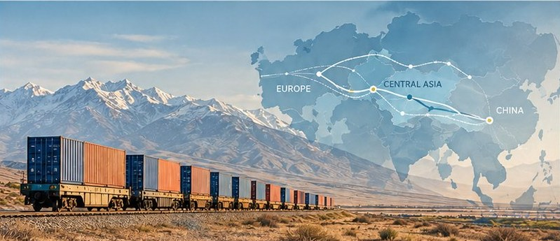

Latest article
Hedging, not hugging: How Central Asian states shape their exposure to China
China’s economic footprint in Central Asia is growing fast. But does deeper engagement automatically mean deeper dependence?
Read the article →